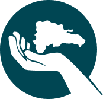

Cadara Software Development Inc. es una compañia tecnologica que busca que su marca, empresa u organizacion sea capaz de proveer un mejor servicio y producto para sus clientes.

Somos una compañia que cree que la ciencia y la creacion de conocimiento que existe en la tecnologia son una fuente de desarrollo para la Republica Dominica.

Somos una compañia que persigue que nuestros empleados esten totalmente comprometidos en brindar servicio de calidad y excelencia a nuestros clientes.

Somos una compañia dedicada a la produccion de Software (desktop, web y mobil), consultoria e implementacion de infraestructuras (bases de datos, controles de usuario, backups, seguridad), redes de informacion (LAN,WLAN,WAN) asi como tambien servicios de soporte tecnico a computadoras para negocios de todos los tamaños.
Porque queremos la satisfaccion de nuestros clientes, mejorar sus negocios y ayudarlos a alcanzar sus metas mas rapidamente. Esta compañia existe para cambiar el paradigma de que la tecnologia es impredecible y que en el mundo de la tecnologia no hay personas transparentes, confiables y virtuaosas.
Porque queremos servir como catalizador para el desarrolllo de la Republica Dominicana y su gente. Nuestra compañia no solo persigue la creacion de un espacio de trabajo para un gran numero de personas sino servir como base o influencia para aquellas personas que quieren hacer sus sueños realidad.
Nuestros clientes son miembros de nuestra familia. Queremos entenderlos,
queremos conocer lo que hacen y a donde quieren llegar. Esto es para nosotros
la unica forma de hacer negocios y de esta manera es como cuidaremos y protegeremos
su integridad, continuidad y crecimiento.
Cadara Software Development Inc. no realiza transacciones de negocios,
construye relaciones. Para nosotros es mas importante conocer las metas de su negocio
y ayudarlo a alcanzarlas mas que la compensacion que pudieramos recivir por crear
un producto que no lo ayude alcanzar sus metas.
Nuestra mision es servir, servir de la manera correcta. De manera que nuestros clientes vuelvan a pedir nuestros servicios. Para Cadara Software Development Inc. esta claro que el producto nos es solamente el resultado final sino todo el proceso que nos permite obtener ese resultado
Nuestra vision era convertirnos en una compañia de confianza para nuestros clientes y lo hemos logrado. En la actualidad nuestros clientes constantemente consumen la variedad de servicios que ofrecemos y continuamos creando relaciones mas sercanas con sus marcas y negocios.
Queremos ser el punto de referencia para los servicios tecnologicos de negocios en Republica Dominicana a traves de nuestra division de soporte.
Queremos convertirnos en una familia mas grande con mas de 80 agentes de cambio que sirvan a nuestros clientes con servicios de alta calidad en sus necesidades de produccion digital (SOFTWARE, WEB, BANNERS, MOBILE APPLICATIONS).
Ayudar a la Republica Dominicana a ubicarce en el radar de esos que buscan establecer operaciones de production digital serca de la costa.
AL MISMO TIEMPO, QUEREMOS CREAR CONTINUAMENTE SPIN-OFFS BASADOS EN LAS IDEAS DE NUESTRO EQUIPO.

A través de un programa de pasantías que entrena talentos para convertirse en agentes de cambio para las diferentes áreas de CSD.
A través del contacto personalizado con nuestros empleados. Para comprender sus problemas, necesidades y servir como un canal para resolver cualquier problema o problema que puedan tener.
A través de la voz de nuestros clientes.
Al involucrar a empresas como Gartner para publicar la República Dominicana como un lugar adecuado para invertir en operaciones de producción digital cerca de la costa.
Al motivar la implementación de negocios o ideas de los miembros de nuestro equipo para que puedan generar sus propios negocios utilizando GBH como palanca.
Somos una empresa dedicada a la producción de software (escritorio, web y móvil), consultoría e implementación de infraestructura (bases de datos, controles de usuario, copias de seguridad, seguridad), redes de datos (LAN, WLAN y WAN), así como servicios de soporte técnico. a computadoras para empresas de todos los tamaños.